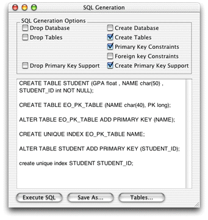

Generate
SQL
Now that you've built an EOModel, you need to write the
table information to the database. Fortunately, EOModeler generates
SQL for you, just follow these steps:
- Select the
Student entity in the entities list.
- Choose Generate SQL from the Property menu.
- Deselect all options except Create Tables, Primary Key Constraints,
and Create Primary Key Support, as shown in Figure 3-9.
- Click Execute SQL.
Figure 3-9 Generate
SQL

- To verify the table was written to the database, in OpenBase
Manager, select Schema from the Database menu. You should see two
tables: EO_PK_TABLE and STUDENT. Select the Student table and verify
that the attributes you added to the model were written to the database.
© 2002 Apple Computer, Inc. (Last Updated May 1, 2002)